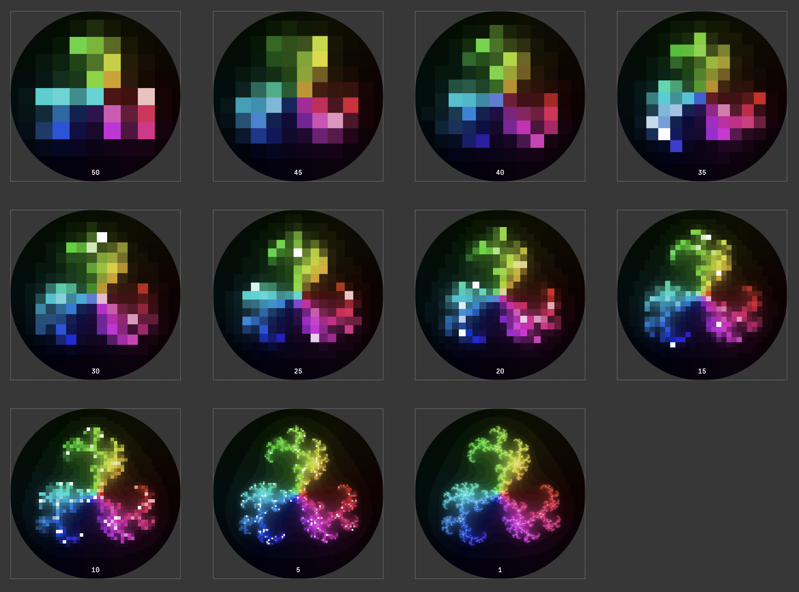

Snapshots
A snapshot is a view of the current Luxor drawing in its current state, before it's been closed via finish. You can take a snapshot, then continue drawing on the current drawing.
You can take a snapshot only for drawings created using the :rec (recording) format.
The following code exports a series of snapshots made with snapshot, showing the state of the computation for different values of the stepby parameter. (This image is a composite of all the snapshots.)

using Luxor, ColorSchemes, Colors
function julia(z, c, maxiter::Int64)
for n = 1:maxiter
abs(z) > 2 ? (return n) : z = z^3 + c
end
return maxiter
end
function drawjulia(c::Complex, pwidth, pheight;
klo = 0.0,
khi = 1.0,
cpos = Point(0, 0),
w = 4,
stepby=1,
maxiterations = 300)
xmin = cpos.x - w/2; ymin = cpos.y - w/2
xmax = cpos.x + w/2; ymax = cpos.y + w/2
lo = 10; hi = 2
for col = -pwidth/2:stepby:pwidth/2
for row = -pheight/2:stepby:pheight/2
imagex = rescale(col, -pwidth/2, pwidth/2, xmin, xmax)
imagey = rescale(row, -pheight/2, pheight/2, ymin, ymax)
pixelcolor = julia(complex(imagex, imagey), c, maxiterations)
if pixelcolor > hi
hi = pixelcolor
end
if pixelcolor < lo
lo = pixelcolor
end
s = rescale(pixelcolor, klo, khi)
a = slope(Point(row, col), O)
h, sa, l = getfield.(convert(HSL, get(ColorSchemes.inferno, s)), 1:3)
sethue(HSL(mod(180 + 360 * a/2π, 360), sa , 2l))
box(Point(row, -col), stepby, stepby, :fillstroke)
end
end
sethue("white")
text("$(stepby)", boxbottomcenter(BoundingBox()) + (0, -20), halign=:center)
snapshot(fname = "/tmp/temp-$(stepby).png")
return lo, hi
end
function main()
w = h = 500
Drawing(w, h, :rec)
fontsize(20)
fontface("JuliaMono-Bold")
origin()
circle(O, w/2, :clip)
for s in vcat(50:-5:1,1)
l, h = drawjulia(-0.5368 + 0.0923im, w, w, maxiterations = 250,
w=3, stepby=s, klo=1, khi=100)
end
finish()
preview()
end
main()